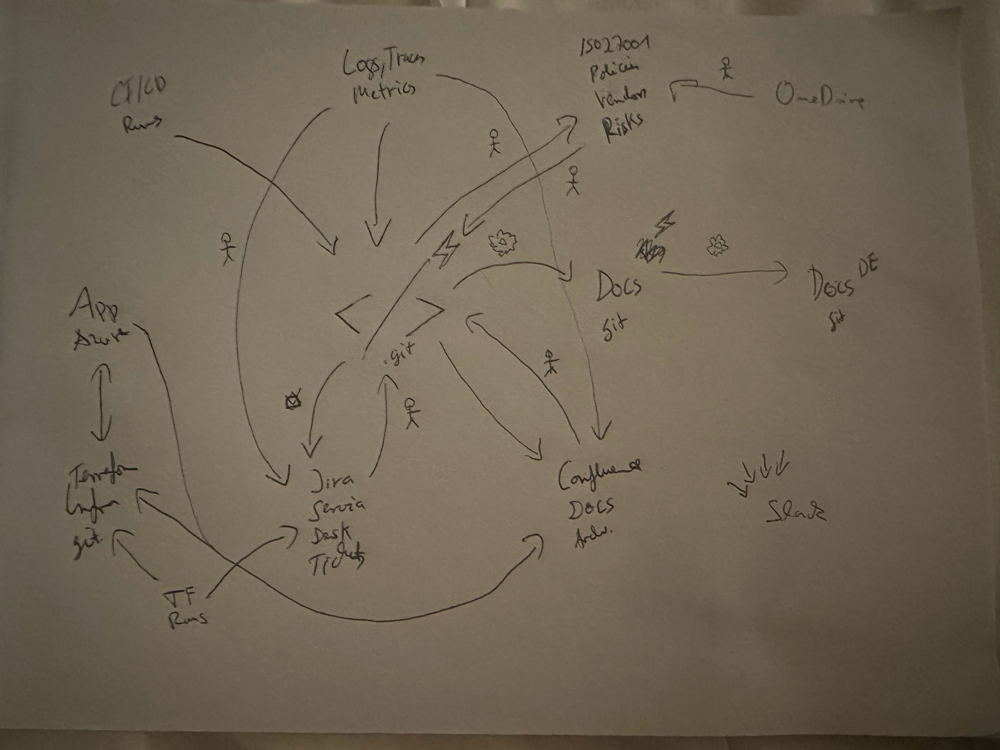

Loop Storming
A short, collaborative workshop for discovering the agentic loops between your systems — in the spirit of Event Storming. Map the systems, connect them into loops, name them.
What you need
A wall or a virtual canvas, the team (people who feel the pain, own the systems, do the work), and sticky notes in three colors:
- system
- A place a loop reads from or writes to — a repo, a store, a tool.
- loop
- An agent that connects systems: it uses some and writes back to others.
- trigger
- What turns a loop — a schedule 🕐, an event ⚡, or manual.
The steps
- Define the systems. Focus on data, source code, and storage. One sticky each; note the URL or repo.
- Brainstorm the loops. Which agentic loops make sense between these systems? Look for the manual, between-systems work.
- Draw them as edges & name them. Arrows for uses and writes back; a verb-first name and a one-line prompt each.
- Add the trigger icons. Mark when each loop turns with an emoji (below). A loop can have more than one.
- Prioritize. Impact × confidence. Start top-right.
- 🕐 schedule
- Runs on a cadence — a cron like
0 6 * * *. - ⚡ event
- Runs on an event — e.g.
pull_request.merged,push. - 📅 once
- Runs a single time — an ISO timestamp.
- 👆 manual
- Runs on demand.
Example: a pen & paper wall
A real Loop Storming session — the systems and loop edges that became this site's example architecture, drawn by hand:

From wall to architecture
Refine the wall into one Loop Architecture file, then let looparch validate, draw, and publish it.
$ looparch init entropy-data
$ looparch diagram entropy-data.looparch.yaml # all loops in one diagram
$ looparch publish entropy-data.looparch.yaml # → Claude Code routines